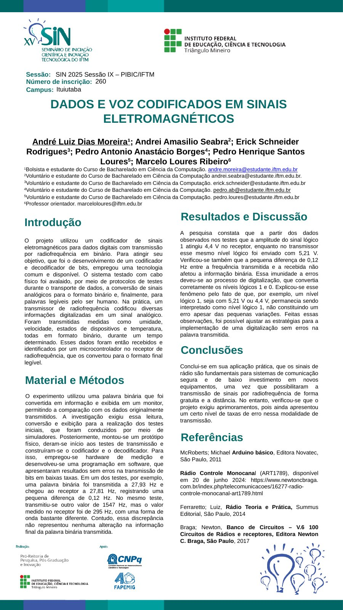
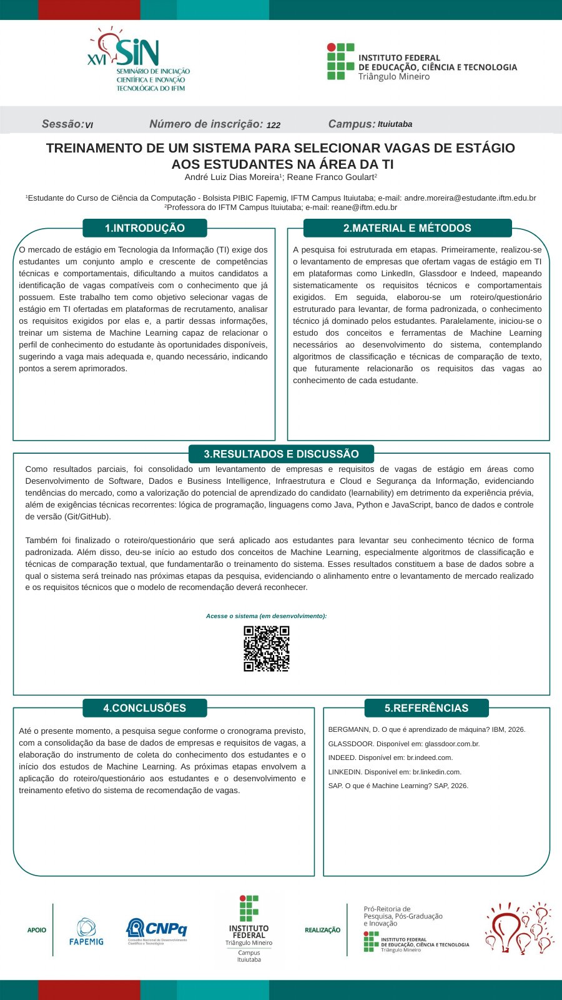

Clique duas vezes em Meus Projetos para ver o que eu já desenvolvi.
Sobre Mim
Sistema:
Portfólio 95 versão 4.00.950
Registrado para:
André Luiz Dias Moreira Ciência da Computação IFTM, Campus Ituiutaba
Computador:
Pentium(r) 133MHz 16,0 MB de RAM
Meus Projetos
ArquivoEditarExibirAjuda
C:\Meus Projetos
Concluídos
Pesquisa
Em breve
Visualizador de algoritmos
Shell ou servidor HTTP em C
Análise de dados públicos brasileiros
Interpretador de uma linguagem simples
Classificador com machine learning
FarmaStock: sistema de farmácia
06/2026 · Engenharia de Software I
FigmaHTMLCSSJavaScriptPythonMySQL
Contexto
Trabalho em grupo de Engenharia de Software I: um sistema web para uma farmácia controlar
estoque, vendas e cadastros (clientes, funcionários, fornecedores e laboratórios), com alertas
de estoque baixo e de vencimento e relatórios financeiros.
O que eu fiz
Fiquei responsável pelo design e pelo front-end:
Desenhei as telas do sistema no Figma
Implementei as 11 telas em HTML, CSS e JavaScript, do login aos relatórios
Criei a navegação do menu sem recarregar a página: o JavaScript busca cada tela com fetch e
mostra no centro
Fiz a tela de alertas, que separa os remédios vencidos, os próximos do vencimento e os com
estoque baixo, com filtros
Validei os formulários, como a senha de funcionário com no mínimo 8 caracteres e a
confirmação
Trabalho em grupo: um sistema de Internet das Coisas para monitorar gases tóxicos em casa.
Sensores ligados a um Arduino detectam gás de cozinha, monóxido de carbono e fumaça, e um módulo
ESP8266 envia as leituras pelo Wi-Fi para o Firebase. Um painel web mostra os dados em tempo
real, com alerta de vazamento, gráficos e relatórios.
O que eu fiz
Fiquei responsável pelo hardware: a montagem do circuito e a programação do Arduino.
Montei o circuito com os sensores de gás MQ-2, MQ-8 e MQ-9 ligados ao Arduino e ao módulo
ESP8266
Programei o Arduino para ler os três sensores a cada segundo e calcular os níveis de gás de
cozinha, monóxido de carbono e fumaça
Criei a detecção de vazamento: quando algum sensor passa do limite, o sistema marca o alerta
Fiz o envio das leituras do Arduino para o ESP8266 pela comunicação serial, de onde vão para
o Firebase
Um portfólio que imita o Windows 95. Em vez de uma página comum, quem visita "liga o computador",
passa pela BIOS e pela tela de carregamento e chega a uma área de trabalho com janelas de
verdade. Tudo feito sem bibliotecas.
O que eu fiz
Inicialização animada (BIOS, teste de memória e tela de carregamento), com atalho Esc para
pular
Janelas que abrem, arrastam, minimizam, maximizam e vêm para a frente, com botões na barra
de tarefas
Menu Iniciar, relógio e sons que podem ser desligados
Propriedades de Data/Hora com calendário, relógio analógico e mapa de fusos horários
Visual do Win95 feito só com CSS (bordas em relevo com box-shadow)
Dados e voz codificados em sinais eletromagnéticos
2025 - 2026 · Bolsista PIBIC/IFTM
ArduinoC++RadiofrequênciaEletrônica
Contexto
Projeto de iniciação científica sobre transmitir dados digitais por radiofrequência, com
tecnologia barata e fácil de encontrar. Um transmissor codifica informações (umidade,
temperatura, velocidade e estado de dispositivos) em binário, e um microcontrolador no receptor
decodifica e mostra os dados em formato legível. Apresentado no XV SIN do IFTM (2025).
Orientador: Prof. Marcelo Loures Ribeiro.
O que eu fiz
Fui o bolsista do projeto, numa equipe com 4 voluntários
Fiz os testes iniciais em simuladores e depois montei o protótipo físico
Construí o codificador e o decodificador de bits
Medi os sinais: o nível lógico 1 saiu com 5,21 V e chegou com 4,4 V, e a frequência variou
só 0,12 Hz, sem erro na palavra transmitida
Banner

Treinamento de um sistema para selecionar vagas de estágio em TI
2026 - 2027 · Bolsista PIBIC/FAPEMIG (em andamento)
Machine LearningPesquisa de mercado
Contexto
Muitos estudantes de TI têm dificuldade em achar vagas de estágio compatíveis com o que já sabem.
A pesquisa analisa os requisitos das vagas e treina um sistema de Machine Learning que relaciona
o perfil do estudante às oportunidades, sugerindo a vaga mais adequada e o que ainda falta
aprender. Apresentado no XVI SIN do IFTM. Orientadora: Profª. Reane Franco Goulart.
O que eu fiz
Mapeei empresas e requisitos de vagas de estágio no LinkedIn, Glassdoor e Indeed, nas áreas
de Desenvolvimento, Dados e BI, Infraestrutura e Cloud e Segurança
Identifiquei tendências do mercado, como a valorização da capacidade de aprender mais do que
da experiência
Criei o questionário que vai levantar o conhecimento técnico dos estudantes
Estou estudando algoritmos de classificação e comparação de texto para treinar o sistema
Banner

6 objeto(s)
Currículo - WordPad
ArquivoEditarExibirInserirFormatarAjuda
Times New Roman12
André Luiz Dias Moreira
Estudante de Ciência da Computação
Formação
Bacharelado em Ciência da Computação
IFTM, Campus Ituiutaba | 2023 - em andamento
Pesquisa e extensão
Bolsista PIBIC
IFTM | 2025 - 2026
Projeto Dados e voz codificados em sinais eletromagnéticos
Orientador: Prof. Marcelo Loures Ribeiro
Bolsista FAPEMIG
IFTM | 2026 - 2027
Sistema que indica vagas de estágio para estudantes de TI
Orientadora: Profª. Reane Franco Goulart
Projetos
FarmaStock
Engenharia de Software I | 06/2026
Sistema de farmácia com design no Figma, em Python e MySQL
Pokédex
Programação Web I | 06/2026
Aplicação web para visualização de informações sobre pokémons
Sensores de gases
Projeto Integrador Extensionista II | 06/2026
Sistema de monitoramento de gases em tempo real
Portfólio 95
Desenvolvimento de Software | 06/2026
Desenvolvimento de um portfólio digital com HTML, CSS e JavaScript
Dados e voz codificados em sinais eletromagnéticos
PIBIC/IFTM | 2025/2026
Estudo e análise de como dados e voz são codificados em sinais eletromagnéticos
Treinamento de um sistema para selecionar vagas de estágio aos estudantes
na área da TI
FAPEMIG/IFTM | 2026/2027
Desenvolvimento de um sistema para selecionar vagas de estágio aos estudantes na área da
TI
Habilidades
HTML · CSS · JavaScript · React · Python · Java · C · Git e GitHub · Octave · MySQL · Linux